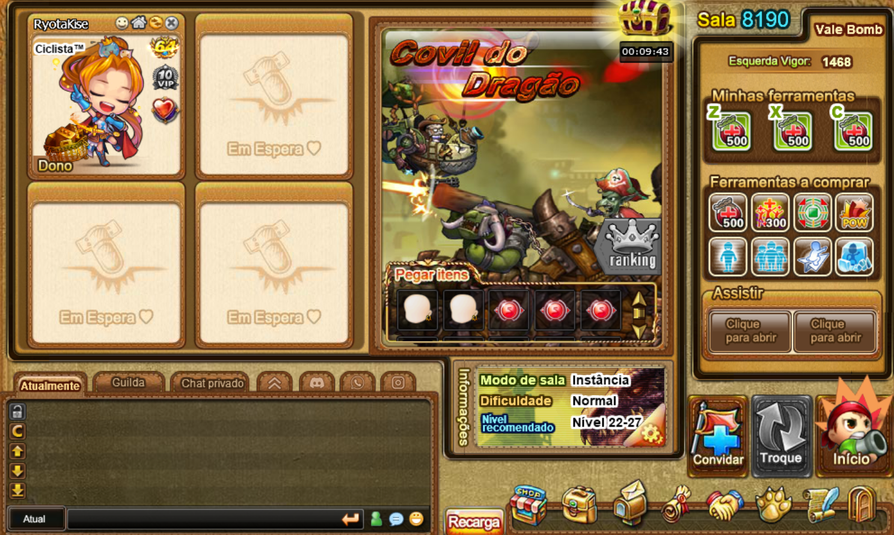
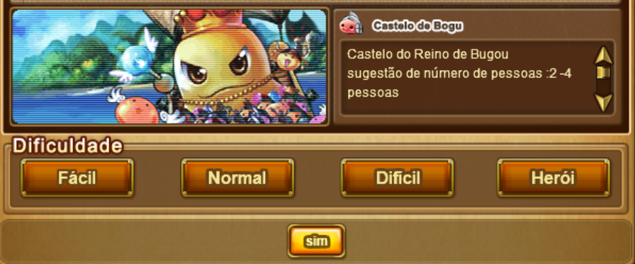
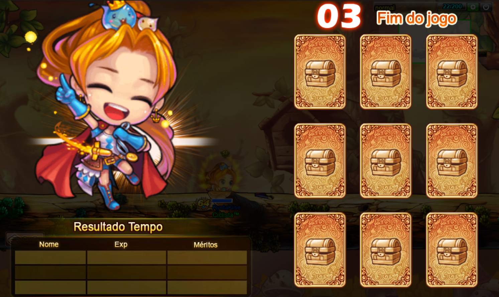
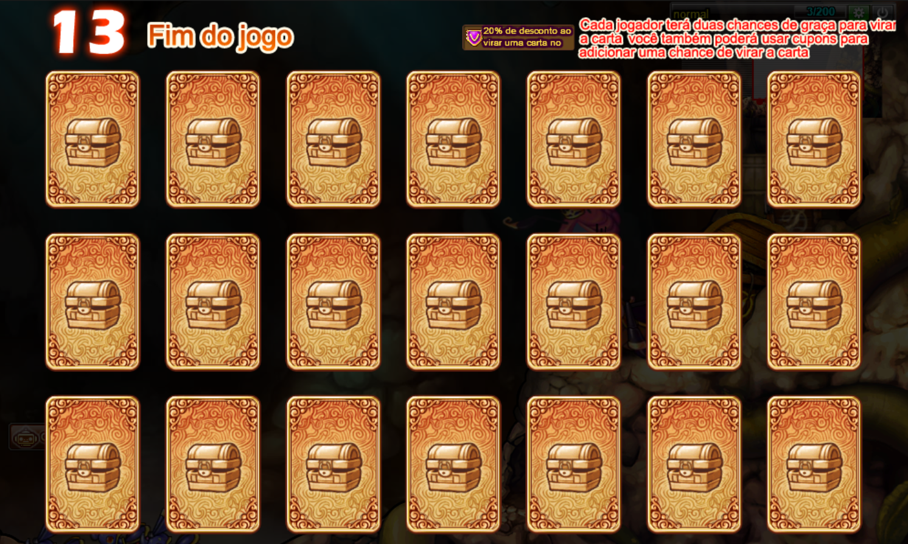

As instâncias são um sistema PVE de raid, onde os jogadores podem entrar e dropar itens específicos de cada uma.
As instâncias podem ser passadas em grupos de 1 a 4 pessoas. Sendo mais recomendado passar em grupos maiores, para ser mais rápido e mais garantido a passagem. Porém, nada impede que você passe sozinho caso tenha certeza de que consegue.

Todas as instâncias possuem dificuldades selecionáveis, que vão do fácil ao heróico:

A instância "Formigueiro" possui apenas as dificuldades fácil e normal;
A instância "Galinheiro Louco" não possui a dificuldade heróica;
As intâncias "Tribo Piatan", "Castelo Sombrio" e "Covil do Dragão" não possuem a dificuldade fácil.
Cada instância possui uma quantidade de estágios específicos, que podem aumentar ou não conforme sua dificuldade.
No fim de um estágio, cada jogador da equipe pode virar uma carta e ganhar uma recompensa.

Ao passar o último estágio, o número de cartas selecionáveis aumenta para 2 ou 3 (caso possua vip) e as recompensas são ainda melhores!

Você pode conferir mais detalhes sobre cada uma das instâncias navegando pelo menu principal na aba "instâncias".